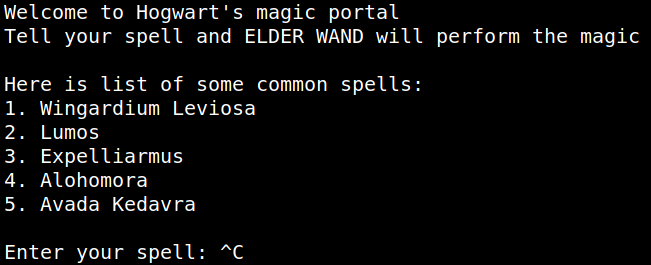
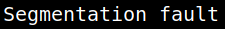

4.1 Buffer overflow: Crashing the program
We're running the “server_hogwarts” server from the previous step.
The application is not stripped which will make debugging a bit more easy. The application is also built with an executable stack which could make a buffer overflow exploit possible.
1. Run the following command on your Kali Machine.
$nc 127.0.0.1 9898
Output:

2. Let's see if we can get it to crash when we give it some very large input.
Introduce a large string as “aaaaaaaaaaaaaaaaaaaaaaaaaaaaaaaaaaaaaaaaaaaaaaaaaaaaaaaaaaaaaaaaaaaaaaaaaaaaaaaaaaaaaaaaaaaaaaaaaaaaaaaaaaaaaaaaaaaaaaaaaaaaaaaaaaaaaaaaaaaaaaaaaaaaaaaaaaaaaaaaaaaaaaaaaaaaaaaaaaaaaaaaaaaaaaaaaaaaaaaaaaaaaaaaaaaaaaaaaaaaaaaaaaaaaaaaaaaaaaaaaaaaaaaaaaaaaaaaaaaaaaaaaaaaaaaaaaaaaaaaaaaaaaaaaaaaaaaaaaaaaaaaaaaaaaaaaaaaaaaaaaaaaaaaaaaa”.
3. On the shell where you're running the “server_hogwarts” server you'll see the following message.
Output:

It's vulnerable to Buffer overflow attack.
Buffer overflow, it is a technique to exploit memory referencing in programming. Instead of normal execution of program, we can modify its execution using inputs in such a way that our code from the input is executed. More info: https://www.exploit-db.com/docs/english/28475-linux-stack-based-buffer-overflows.pdf